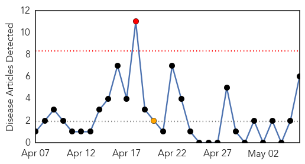
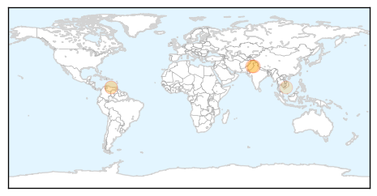

Mumps
30-Day Web Trend
1 alerts, 1 warnings

30-Day Twitter Trend
0 alerts, 0 warnings

Article Locations
Article Confidences

Top Articles:
- 0.992
- Evanston Township High School families warned of possible mumps case
- 0.979
- Mumps outbreak tops 300 reported cases
- 0.960
- Suspected mumps cases reported at Evanston Township High School, Mundelein's Fremont Middle School
- 0.939
- Mumps Cases Top 320 In Three Central Ohio Counties
- 0.915
- 82 mumps cases reported in Illinois
- 0.798
- Evanston Township High Parents Warned of Mumps in School
Top Tweets:
-
No tweets found for May 06, 2014
Dengue Fever
30-Day Web Trend
1 alerts, 0 warnings

30-Day Twitter Trend
0 alerts, 0 warnings

Article Locations
Article Confidences

Top Articles:
Top Tweets:
-
No tweets found for May 06, 2014